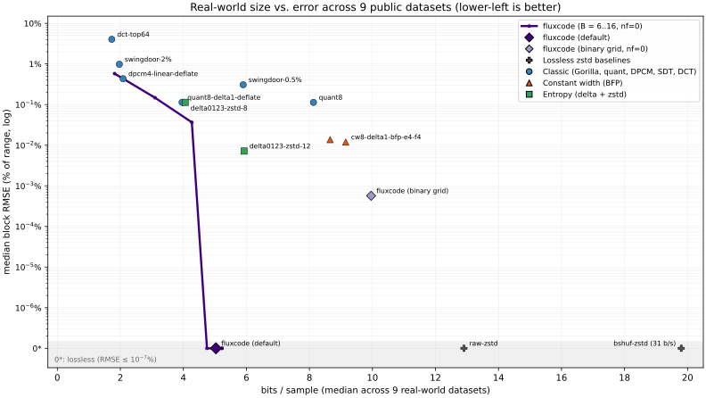

This repository contains two complementary tools for scientific and engineering time series:
fluxcode for storage compression and fluxprune for volume reduction. You can use
either one on its own, or chain them together—pruning a high-volume series first and then packing the remaining
(time, value) points with fluxcode.
fluxcode — reduce storage with minimal lossPacks float64 values and optional exact int64 timestamps into self-describing block
groups. Every sample is preserved within a strict error bound, exact binary, decimal, and rational/ADC grids decode
bit-for-bit, and decoding runs at multi-GB/s on a single core.
fluxprune — reduce data volume itselfA pre-pass downsampler that drops redundant points and keeps the subset that carries a series' shape for linear interpolation. Fewer stored points means faster scans, plots, and downstream analytics.
Real-world size-vs-error scatterplots comparing fluxcode against competing codecs on public datasets,
plus hidden ADC/rational grid recovery and throughput across 14 dataset families (~29M samples).
Exact and tolerance-rounded (time_error) timestamp storage across regular grids, gapped clocks,
jittered sensors, and irregular event streams.
Point-selection quality, stopping rules, noise floor, and speed compared against optimal DP, swinging-door trending, Visvalingam-Whyatt, and LTTB.
ReferenceThe normative binary layout and design rationale for fluxcode block groups
(docs/SPEC.md).
Synthetic and edge-case codec stress tests, a swinging-door historian (SDT) case study showing how pruning and
fluxcode interact, and rate-control experiments.

fluxcode from B = 6 to 16; the diamond marks default settings.
View full benchmarks →

fluxprune): reconstruction error vs. points kept per hour
compared against optimal DP, swinging-door trending, Visvalingam-Whyatt, and LTTB.
View fluxprune results →fluxcode, fluxprune), optional Rust extension, and test suite.docs/SPEC.md) — normative binary layout and design rationale.docs/ENCODER.md) — grid detection, noise floor, and predictor selection.docs/TUNING.md) — choosing effort, noise_floor_sigma, time_error, and grid modes.docs/PERFORMANCE.md) — throughput measurements and architecture notes.